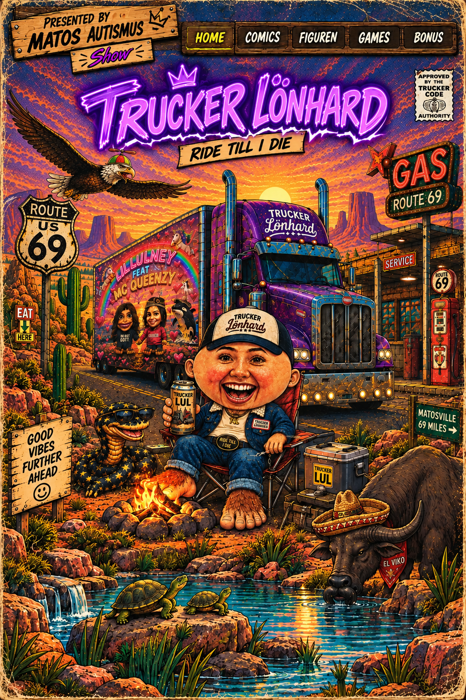

THE ADVENTURE OF
TRUCKER LÖNHARD
Eine völlig durchgedrehte Reise über staubige Highways, durch lange Nächte und in eine Welt, in der alles möglich ist.
Comicseiten werden gesucht …
THE ADVENTURE OF TRUCKER LÖNHARD
LÄDT …
SEITE 1